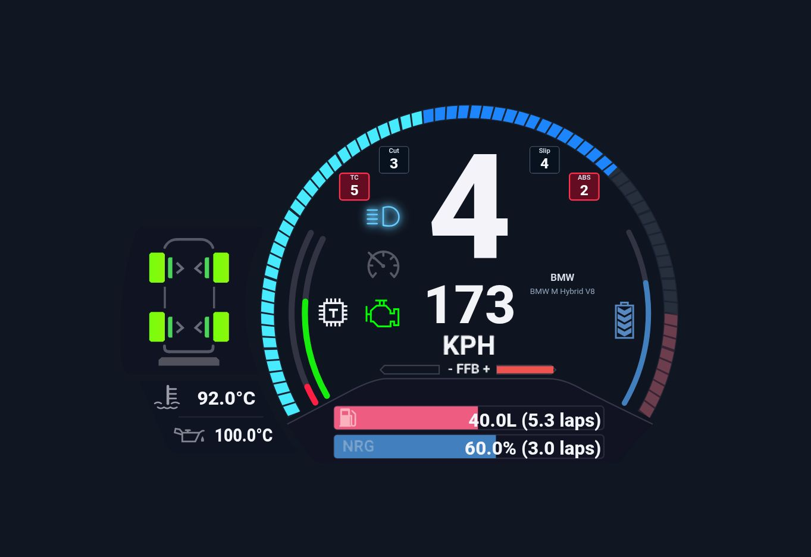

Rookline
Review your sessions and driving evidence, explore your laps, and give the next setup decision some context.
Explore RooklineYOUR GRID. YOUR COCKPIT. YOUR LAP.
One home for the tools around your racing. Plan your next start, make your cockpit your own, keep the feel of your wheel, and understand the drive.

Four tools. One Rookline home.
Review your sessions and driving evidence, explore your laps, and give the next setup decision some context.
Explore RooklineYour LMU instruments, race information and circuit map in a desktop or VR HUD. Find a layout that feels at home in your car.
Explore DriveMatch your cars to the RaceHub profiles you saved. Change cars in LMU or AC Evo and keep the feel you chose.
Explore RookForceFind upcoming online races, see which classes can enter, and read the published weather forecast before you join.
Open the race plannerBuilt by ConvexRook. Each tool has its own job; this is the place to explore them, get the downloads, and find your next start. The Planner works in your browser with LMU closed.